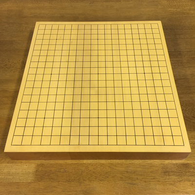
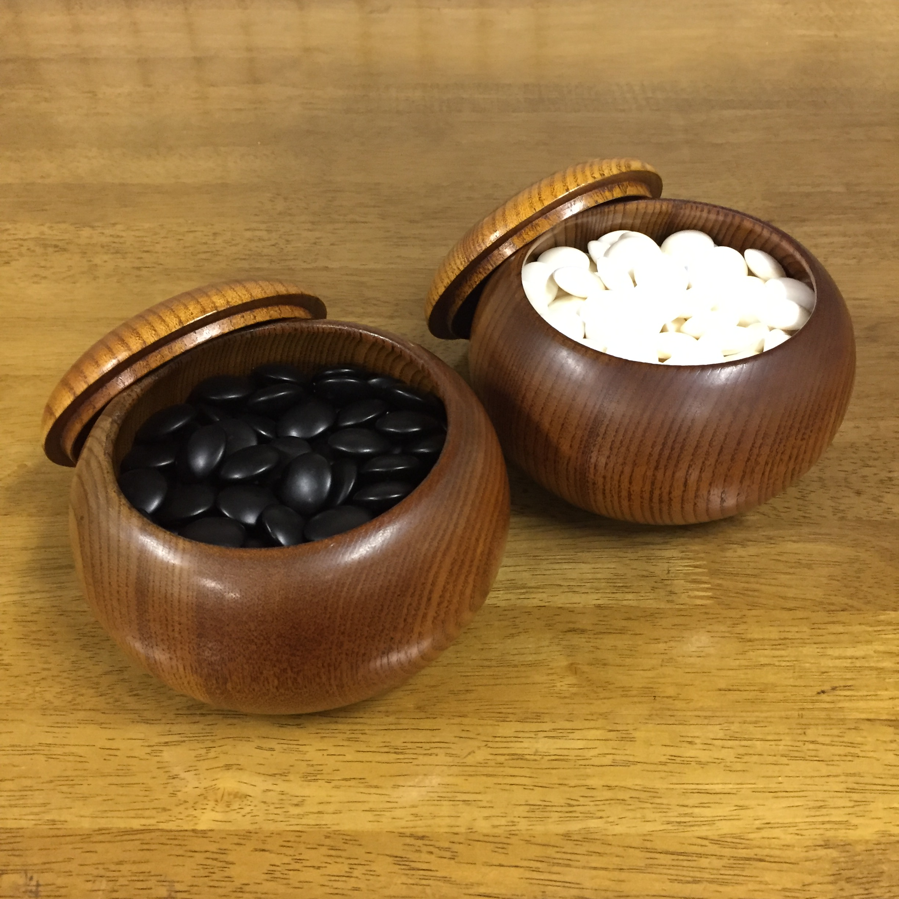
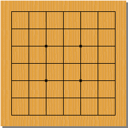
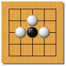
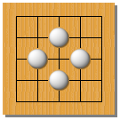

囲碁ってどんなゲーム？
皆さんは囲碁といえば、どんなことを思い浮かべますか？
たまにテレビや新聞で見たりして、なんとなく存在は知っているけど、
実際にどんなゲームなのかは知らない、という方が多いのではないでしょうか。
囲碁はとても奥が深く、知れば知るほど面白いゲームです。
そしてその入り口は易しく、どなたでもすぐに始めることができます。
囲碁は古代中国で誕生し、飛鳥時代以前に日本へ伝わったとされる、非常に長い歴史を持つゲームです。
黒石を使う人と白石を使う人に分かれて、石を交互に配置し、自分の石で囲った領域の広さを競います。
棋具
囲碁では「碁盤」と「碁石」という道具を使います。 碁石には黒石と白石があり、碁石の入れ物を「碁笥（ごけ）」といいます。

本格的な碁盤はこのように、縦横それぞれ１９本ずつ線が引かれていて、「１９路盤」といいます。
大きくて難しそうですが、９路盤や１３路盤といった、初心者向けの碁盤も使われています。
地を囲う
囲碁の目的は、相手よりも多くの空間を囲うことです。
こちらは７路盤での対局の一例です。
ボタンを押して、手順を再生してみましょう。
同じ色の石で囲まれた空間を「地（じ）」といいます。
この対局では、最終的に■が白の地、▲が黒の地となっています。
そして黒の方が多く地を囲えたので、黒の勝ちとなりました。

石を取る
相手の石は、周りを囲めば取ることができます。 石を取る、取られるということも、戦いを有利に進める上で重要な要素です。
石を取られると、基本的には不利になります。 つまり囲碁というのは、石を取られないように注意しつつ、 いかに自分の地を広げていけるか、というゲームなのです。
⇒